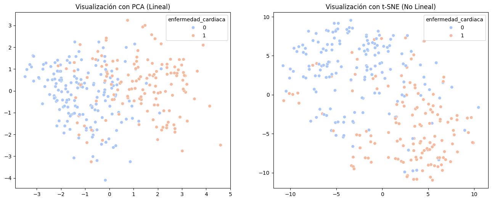
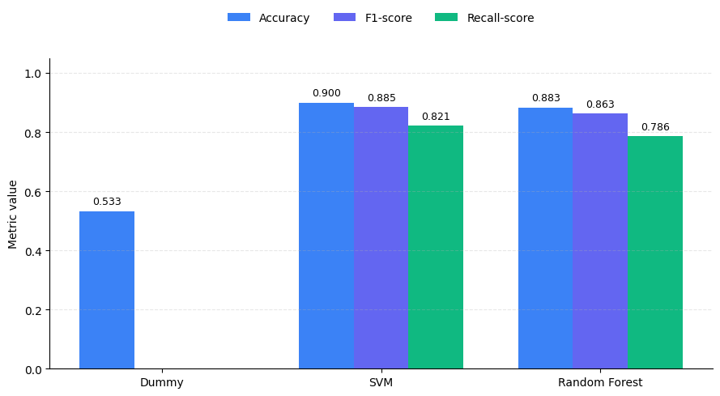
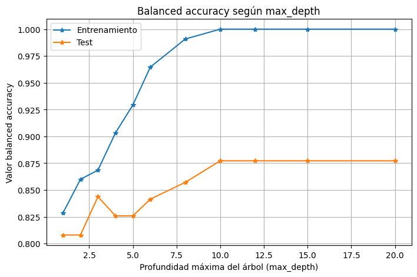

Proyecto académico
Clasificación de enfermades cardíacas
Desarrollo y comparación de modelos de aprendizaje supervisado para predecir enfermedades cardíacas a partir de datos clínicos. El proyecto incluye análisis exploratorio, reducción de dimensionalidad mediante PCA y evaluación de distintos algoritmos de clasificación.
Problema
Las enfermedades cardíacas continúan siendo una de las principales causas de muerte a nivel mundial 1. Contar con herramientas que permitan estimar el riesgo de un paciente a partir de información clínica puede apoyar el diagnóstico médico y facilitar una detección temprana.
En este proyecto se aborda un problema de clasificación supervisada, cuyo objetivo es determinar si un paciente presenta o no enfermedad cardíaca utilizando variables clínicas obtenidas durante su evaluación médica.
Solución
Se desarrolló un flujo completo de Machine Learning utilizando el conjunto de datos Heart Disease Cleveland 2, que incluyó preprocesamiento de datos, análisis exploratorio, reducción de dimensionalidad mediante PCA y t-SNE, y entrenamiento de distintos modelos de clasificación.

Posteriormente, se comparó el desempeño de un Dummy Classifier, Support Vector Machine (SVM) y Random Forest, evaluando su capacidad predictiva mediante métricas de clasificación y validación sobre datos no utilizados durante el entrenamiento.
Resultados y conclusión
Los modelos entrenados obtuvieron un desempeño considerablemente superior al clasificador base, demostrando que las variables clínicas disponibles contienen información suficiente para predecir la presencia de enfermedad cardíaca.
Entre los modelos evaluados, Support Vector Machine (SVM) obtuvo el mejor equilibrio entre capacidad predictiva y generalización, mientras que Random Forest mostró indicios de sobreajuste al alcanzar un rendimiento prácticamente perfecto sobre los datos de entrenamiento, pero inferior sobre los datos de prueba.

Para complementar la comparación entre modelos, se analizó el comportamiento de Random Forest al aumentar la profundidad máxima de los árboles. Si bien el desempeño sobre los datos de entrenamiento continúa mejorando hasta alcanzar un valor prácticamente perfecto, el rendimiento sobre el conjunto de prueba se estabiliza. Esta diferencia entre ambas curvas constituye un indicio de sobreajuste y refuerza la elección de SVM como el modelo con mejor capacidad de generalización.

En conjunto, los resultados muestran que es posible identificar patrones relevantes en datos clínicos para apoyar la predicción de enfermedades cardíacas mediante técnicas de aprendizaje supervisado. Si bien estos modelos no reemplazan el juicio médico, representan herramientas de apoyo que pueden contribuir a una detección más temprana y a una mejor toma de decisiones cuando se utilizan junto con la evaluación clínica.
Desde una perspectiva técnica, este proyecto permitió aplicar un flujo completo de Machine Learning, abarcando desde el análisis exploratorio de datos y la reducción de dimensionalidad hasta la comparación de modelos, la evaluación de su capacidad de generalización y la interpretación crítica de sus resultados.
Repositorio
Este proyecto nació como parte del curso Plataformas de Machine Learning del Diplomado en Machine Learning de la Pontificia Universidad Católica de Chile (UC). Posteriormente fue reorganizado y documentado para formar parte de este portafolio, incorporando una estructura orientada a facilitar la reproducción del análisis y la comprensión del flujo completo de trabajo.
Contenido del repositorio
- Dataset Heart Disease Cleveland utilizado para el entrenamiento.
- Notebook con el flujo completo de análisis y desarrollo del proyecto.
- Implementación de PCA y modelos de clasificación supervisada.
- Comparación entre Dummy Classifier, SVM y Random Forest.
- Evaluación de desempeño mediante distintas métricas de clasificación.